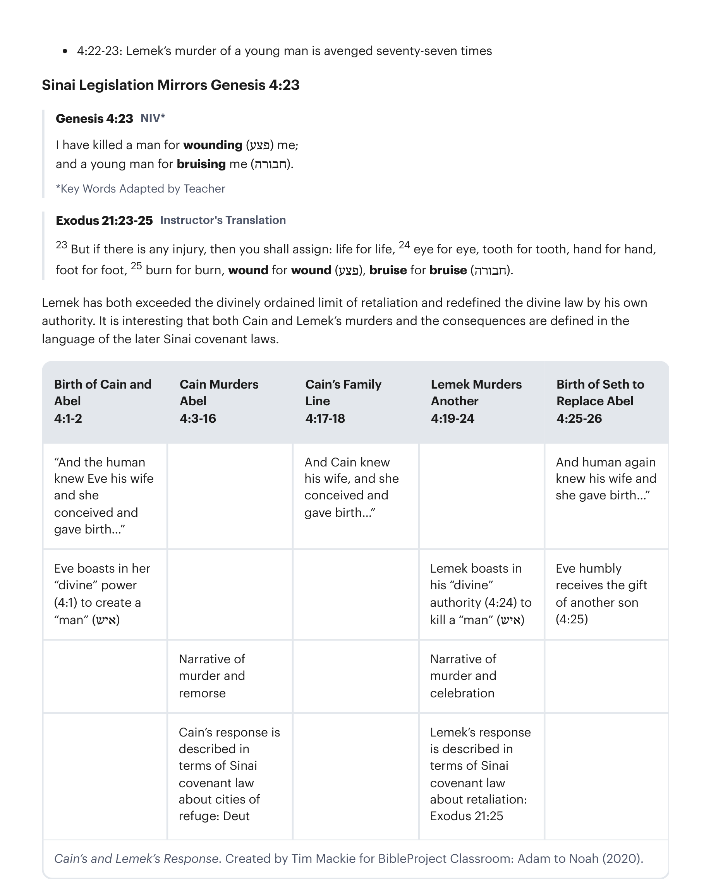
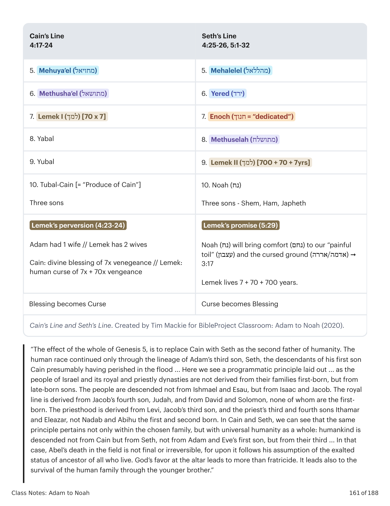

Sessão 28: Um Conto de Duas SementesSession 28: A Tale of Two Seeds
Principais LiçõesKey Takeaways
- As ações de Leméque intensificam e espalham a destruição e o derramamento de sangue que começaram com Caim e a serpente.Lemek's actions intensify and spread the destruction and bloodshed that began with Cain and the snake.
- Gênesis 4 deixa claro que o tema das duas sementes de Gênesis 3 será um conflito contínuo.Genesis 4 makes it clear that the theme of the two seeds from Genesis 3 will be an ongoing conflict.

O Leméque AssassinoThe Murderous Lemek
Leméque é a sétima geração de Adão através de Caim, e sua vida culmina e distorce duas realidades dadas por Deus na narrativa. 1. Deus provê a mulher para o humano em Gênesis 2, mas Leméque toma duas esposas para si. 2. Deus prové Caim com misericórdia e uma marca de proteção, mas Leméque declara sua própria marca de proteção. Leméque tem três filhos de suas duas esposas, e cada um está associado com o desenvolvimento da civilização humana de maneiras importantes. Os nomes dos três filhos são trocadilhos de duas raízes semíticas "canal de água" (yabal) ou "oferta de tributo" (yobil/yubal). Cada um dos três filhos é intitulado o "pai" de uma instituição cultural. A narrativa está destacando as origens da civilização humana e de suas diversas instituições. Filho 1: Jabal (יבל) — Significado do Nome: "Riacho, rio" (veja Is 30:25; 44:4) ou "tributo, oferta" (veja Sofonias 3:10). Descrição: "Pai dos que habitam em tendas e entre rebanhos." Instituição Cultural: Pecuária em escala massiva. Filho 2: Jubal (יובל) — Significado do Nome: "Curso de água, canal" (veja Jr 17:8) ou "tributo, oferta" (veja Is 18:7). Descrição: "Pai dos que usam harpa e flauta." Instituição Cultural: Arte musical. Filho 3: Tubal-Caim (תובל קין) — Significado do Nome: "Oferta de tributo de Caim." Descrição: "Martelador dos que trabalham com ferro e bronze." Instituição Cultural: Metalurgia.Lemek is the seventh generation from Adam through Cain, and his life culminates and distorts two God-given realities in the narrative. 1. God provides the woman for the human in Genesis 2, but Lemek takes two wives for himself. 2. God provides Cain with mercy and a mark of protection, but Lemek declares his own mark of protection. Lemek has three sons from his two wives, and each is associated with the development of human civilization in important ways. All three sons' names are wordplays from two Semitic roots "water canal" (yabal) or "tribute offering" (yobil/yubal). Each of the three sons is titled the "father" of a cultural institution. The narrative is highlighting the origins of human civilization and its diverse institutions. Son 1: Yabal (יבל) — Meaning of Name: "Stream, river" (see Isa. 30:25; 44:4) or "tribute, offering" (see Zephaniah 3:10). Description: "Father of those dwelling in tents and among herds." Cultural Institution: Animal husbandry on a mass scale. Son 2: Yubal (יובל) — Meaning of Name: "Water course, canal" (see Jer. 17:8) or "tribute, offering" (see Isa. 18:7). Description: "Father of those using the harp and the flute." Cultural Institution: Musical art. Son 3: Tubal-Cain (תובל קין) — Meaning of Name: "Tribute offering of Cain." Description: "Hammerer of those fashioning with iron and bronze." Cultural Institution: Metallurgy.

Este relato teria ficado em contraste com os vizinhos de Israel e suas narrativas para as origens da pecuária, música e metalurgia. Todos estes são vistos como sabedoria divina recebida dos deuses. "[O] desenvolvimento das artes da civilização no antigo Oriente Próximo era tipicamente atribuído aos deuses. [Na mitologia mesopotâmica] elas foram introduzidas à raça humana pelos sete sábios divinos (chamados apkallu). No Mito de Inanna e Enki, a deusa padroeira de Uruk tenta adquirir as artes da civilização de Enki, o senhor de Eridu. Entre as noventa e quatro 'artes' mencionadas no texto estão ofícios como realeza e sacerdócio; objetos como espada e aljava; ações como correr, beijar e fazer amor; qualidades como heroísmo ou desonestidade; e abstrações como entendimento e conhecimento. Mas pertinentes a esta passagem, a lista também inclui o ofício do caldeireiro (junto com outros ofícios), o alaúde ressonante e a arte do canto, e o redil de ovelhas." "No fim, a construção de cidades era um empreendimento divino. Dentro desta tradição, a construção de cidades estava relacionada, e era parte, da criação, porque a criação envolvia o estabelecimento do mundo como os mesopotâmios o conheciam — não apenas em termos do cosmo físico, mas também incluindo o aspecto civilizado do mundo social e econômico. Em contraste, Gênesis vê a construção de cidades em termos puramente humanos." "Os mesopotâmios criam que a humanidade era inicialmente bárbara e primitiva. A civilização, consistindo de cidades, realeza, artes, ciências e tecnologia, entre outras coisas, era um dom dos deuses, dado aos humanos pelos deuses. Uma vez que os humanos receberam estes elementos civilizadores dos deuses, eles foram além de seu estado inicial de primitivismo e se tornaram civilizados."This account would have stood in contrast to Israel's surrounding neighbors and their accounts for the origins of animal husbandry, music, and metallurgy. These are all viewed as divine wisdom received from the gods. "[T]he development of the arts of civilization in the ancient Near East was typically attributed to the gods. [In Mesopotamian mythology] they were introduced to the human race by the seven divine sages (called the apkallu). In the Myth of Inanna and Enki, the patron goddess of Uruk, attempts to procure the arts of civilization from Enki, the lord of Eridu. Among the ninety-four 'arts' mentioned in the text are offices such as kingship and priesthood; objects such as sword and quiver; actions such as running, kissing, and lovemaking; qualities such as heroism or dishonesty; and abstractions such as understanding and knowledge. But pertinent to this passage, the list also includes the craft of the coppersmith (along with other crafts), the resounding lute and the art of singing, and the sheepfold." "In the end, city building was a divine enterprise. Within this tradition, city building was related to, and a part of, creation, because creation involved the establishment of the world as the Mesopotamians knew it—not only in terms of the physical cosmos, but also including the civilized aspect of the social and economic world. In contrast, Genesis sees city building in purely human terms." "[T]he Mesopotamians believed that humankind was initially barbaric and primitive. Civilization, consisting of cities, kingship, arts, sciences and technology, among other things, was a gift from the gods, given to humans by the gods. Once humans received these civilizing elements from the gods, they moved beyond their initial state of primitivism and became civilized."
Walton, John H. (2001). Gênesis: Comentário Ilustrado dos Bastidores Bíblicos Zondervan Vol. 1. Zondervan Academic. Lowry, Daniel D. (2013). Rumo a uma Poética de Gênesis 1-11. Eisenbrauns.Walton, John H. (2001). Genesis: Zondervan Illustrated Bible Backgrounds Commentary Vol. 1. Zondervan Academic. Lowry, Daniel D. (2013). Toward a Poetics of Genesis 1-11. Eisenbrauns.
O terceiro filho de Leméque, Tubal-Caim, é uma referência a Caim, o assassino. Adicionalmente, Tubal-Caim está associado com a metalurgia — informação que nos é dada logo antes da canção assassina de seu pai infere um tom sinistro e sombrio ao "trabalho em metal" de Tubal-Caim. Isto traz à mente uma espada, que é precisamente a interpretação oferecida na tradição judaica antiga (veja Gênesis Rabbá 22:2-3). O design literário de Gênesis 4 leva o leitor a ver o advento da cidade e da metalurgia como desenvolvimentos altamente ambíguos, ou mesmo negativos, por causa de sua associação com a violência assassina de Caim e Leméque. 4:1-16: O assassinato de seu irmão por Caim é vingado sete vezes. 4:17: A cidade/filho Enoque de Caim é uma civilização que multiplica o assassinato. 4:21-22: O filho Tubal-Caim de Leméque cria uma civilização que inventa armas. 4:22-23: O assassinato de um jovem por Leméque é vingado setenta e sete vezes.Lemek's third son's name, Tubal-Cain, is a reference to Cain the murderer. Additionally, Tubal-Cain is associated with metallurgy—information we are given right before his father's murderous song infers an ominous and dark tone to Tubal-Cain's "metal work." This brings to mind a sword, which is precisely the interpretation offered in ancient Jewish tradition (see Genesis Rabbah 22:2-3). The literary design of Genesis 4 leads the reader to view the advent of the city and metallurgy as highly ambiguous, or even negative, developments because of their association with the murderous violence of Cain and Lemek. 4:1-16: Cains murder of his brother is avenged seven times. 4:17: Cain's son/city Enoch is a civilization that multiplies murder. 4:21-22: Lemek's son Tubal-Cain creates a civilization that invents weapons. 4:22-23: Lemek's murder of a young man is avenged seventy-seven times.
A Legislação do Sinai Espelha Gênesis 4:23Sinai Legislation Mirrors Genesis 4:23
Gênesis 4:23 (NVI*): "Matei um homem por me ferir (פצע); e um jovem por me contundir (חבורה)." *Palavras-Chave Adaptadas pelo Professor. Êxodo 21:23-25 Tradução do Instrutor: "23 Mas se houver alguma lesão, então designarás: vida por vida, 24 olho por olho, dente por dente, mão por mão, pé por pé, 25 queimadura por queimadura, ferida por ferida (פצע), contusão por contusão (חבורה)." Leméque tanto excedeu o limite divinamente ordenado de retaliação quanto redefiniu a lei divina por sua própria autoridade. É interessante que tanto os assassinatos de Caim e Leméque quanto as consequências sejam definidos na linguagem das leis posteriores da aliança do Sinai.Genesis 4:23 NIV*: "I have killed a man for wounding (פצע) me; and a young man for bruising me (חבורה)." *Key Words Adapted by Teacher. Exodus 21:23-25 Instructor's Translation: "23 But if there is any injury, then you shall assign: life for life, 24 eye for eye, tooth for tooth, hand for hand, foot for foot, 25 burn for burn, wound for wound (פצע), bruise for bruise (חבורה)." Lemek has both exceeded the divinely ordained limit of retaliation and redefined the divine law by his own authority. It is interesting that both Cain and Lemek's murders and the consequences are defined in the language of the later Sinai covenant laws.

"Setenta e sete vezes [literalmente, 'setenta e sete'] — isto é, setenta e sete vezes tanto. O número, escusado será dizê-lo, não deve ser tomado literalmente. Sete vezes significa em medida perfeita (veja acima, sobre v. 15); setenta e sete vezes significa em medida transbordante, mais do que é devido, muitos por um.""Seventy-sevenfold [literally, 'seventy-seven'] /—that is, seventy-seven times as much. The number, needless to say, is not to be taken literally. Sevenfold means in perfect measure (see above, on v. 15); seventy-sevenfold signifies in overflowing measure, more than is due, many for one."
Cassuto, U. (1961). Um Comentário sobre o Livro de Gênesis (Parte I): de Adão a Noé. Magnes Press.Cassuto, U. (1961). A Commentary on the Book of Genesis (Part I): from Adam to Noah. Magnes Press.
"Embora Caim, ancestral de Lameque, fosse vingado sete vezes por Deus, Lameque toma nas próprias mãos satisfazer seu desejo de vingança através de uma retaliação setenta e sete vezes. Neste ponto, o princípio da justiça retributiva é levado ao ponto de se tornar a caricatura de si mesmo. Além disso, há uma profunda ironia na ousadia de Lameque de referir-se à proteção divina de seu ancestral Caim. A 'imunidade' de Lameque, em contraste, é à custa de violência ilimitada, ele transformou a graça divina para Caim em sua feia contrafação ... Qualquer inconveniência trivial é ocasião para Lameque ceder à violência. O que ele exige não é olho por olho, mas vida por ferida. A canção de Lameque é o último espasmo, por assim dizer, da história do assassinato de Caim ... levando o horror do fratricídio ao seu ápice ... As nuvens estão se ajuntando que em breve trarão o dilúvio.""While Cain, Lamech's ancestor, would be avenged seven times over by God, Lamech takes it into his own hands to satisfy his desire for vengeance through a seventy-sevenfold retaliation. At this point, the principle of retributive justice is pushed to the point of becoming the caricature of itself. Moreover, there is a profound irony in Lamech's effrontery to refer to the divine protection of his ancestor Cain. As Lamech's 'immunity,' by contrast, is at the cost of unlimited violence, he has turned the divine grace to Cain into its ugly counterfeit ... Any trivial inconvenience is occasion for Lamech to yield to violence. What he demands is not an eye for an eye, but a life for a wound. Lamech's song is the last spasm, so to speak, of Cain's murder story ... bringing the horror of fratricide to its apex ... The clouds are gathering that will soon bring about the flood."
LaCocque, Andre (2008). Investida Contra a Inocência: Caim, Abel e o Yahwista. Cascade Books.LaCocque, Andre (2008). Onslaught Against Innocence: Cain, Abel, and the Yahwist. Cascade Books.
Esperança Renascida: A Chegada de Sete em Gênesis 4:25-26Hope Reborn: The Arrival of Seth in Genesis 4:25-26
Gênesis 4:25-26 Tradução do Instrutor: "25 E Adão conheceu sua mulher novamente, e ela deu à luz um filho, e ela o nomeou 'Sete (שת),' porque, 'Deus me designou (שת) outro descendente em lugar de Abel, pois Caim o matou.' 26 E a Sete, também a ele um filho nasceu; e ele chamou seu nome Enos. Então começou-se a invocar o nome de Yahweh." Em contraste com o nascimento de Caim, que Eva atribuiu a seus próprios poderes criativos (Gn 4:1-2), e em contraste com Caim, que usa o nome de seu filho para memorializar sua própria cidade (Gn 4:17), este capítulo termina com uma Eva castigada, que agora destaca a generosidade de Deus em lhe dar outro filho para substituir o Abel assassinado (e, menos diretamente, o Caim exilado). Este retrato de Sete como o substituto de Abel é crucial. Inicia um padrão de design-motivo que ecoa de Gênesis através de 2 Reis. Sete está "em lugar de" (תחת) Abel. O carneiro é oferecido "em lugar de" (תחת) Isaque. Judá se oferece "em lugar de" (תחת) Benjamim. Em contraste com o filho Enoque de Caim, Sete agora tem um filho, Enos (אנוש), que significa, "humanidade." É como se a humanidade recebesse um recomeço com Sete, o que nos ajuda a entender a nota brilhante com que este capítulo sombrio conclui: a adoração de Yahweh.Genesis 4:25-26 Instructor's Translation: "25 And Adam knew his wife again, and she gave birth to a son, and she named him 'Seth (שת),' because, 'God has appointed (שת) me another seed in place of Abel, for Cain killed him.' 26 And to Seth, to him also a son was born; and he called his name Enosh. Then it was begun, to call on the name of Yahweh." In contrast to Cain's birth, which Eve attributed to her own creative powers (Gen. 4:1-2), and in contrast to Cain, who uses his son's name to memorialize his own city (Gen. 4:17), this chapter ends with a chastened Eve, who now highlights God's generosity in giving her another son to replace the murdered Abel (and, less directly, the exiled Cain). This portrait of Seth as the substitute for Abel is crucial. It begins a design pattern motif that echoes from Genesis through 2 Kings. Seth is "in place of" (תחת) Abel. The ram is offering "in place of" (תחת) Isaac. Judah offers himself "in place of" (תחת) Benjamin. In contrast to Cain's son Enoch, Seth now has a son, Enosh (אנוש), which means, "human." It's as if humanity gets a fresh start with Seth, which helps us understand the bright note on which this dark chapter concludes: the worship of Yahweh.

Comparando a Linha de Caim e a Linha de SeteComparing Cain's Line and Seth's Line
As duas linhagens de Caim (Gn 4:17-24) e Sete (Gn 4:25-26, 5:1-32) são justapostas para que o leitor note todo tipo de comparações e contrastes. Linha de Caim (4:17-24): 1. Adão (אדם) → 2. Caim (קין) → 3. Enoque (חנוך) → 4. Irade (עירד) → 5. Meujael (מחויאל) → 6. Metusael (מתושאל) → 7. Leméque I (למך) [70 x 7] → 8. Jabal → 9. Jubal → 10. Tubal-Caim [= "Produto de Caim"]. Três filhos. Linha de Sete (4:25-26, 5:1-32): 0. Deus (+ repetição de 1:26-27) → 1. Adão (אדם) → 2. Sete (שת) → 3. Enos (אנוש = "humanidade") → 4. Quenã (קינן) → 5. Maalalel (מהללאל) → 6. Jarede (ירד) → 7. Enoque (חנוך = "dedicado") → 8. Metuselá (מתושלח) → 9. Leméque II (למך) [700 + 70 + 7 anos] → 10. Noé (נח). Três filhos — Sem, Cã, Jafé. A perversão de Leméque (4:23-24): Adão teve 1 esposa // Leméque tem 2 esposas. Caim: bênção divina de vingança 7x // Leméque: maldição humana de vingança 7x + 70x. A promessa de Leméque (5:29): Noé (נח) trará conforto (נחם) ao nosso "trabalho doloroso" (עצבון) e à terra amaldiçoada (אדמה/אררה) → 3:17. Leméque vive 7 + 70 + 700 anos. Bênção torna-se Maldição / Maldição torna-se Bênção.The two lines of Cain (Gen. 4:17-24) and Seth (Gen. 4:25-26, 5:1-32) are juxtaposed so that the reader notices all sorts of comparisons and contrasts. Cain's Line (4:17-24): 1. Adam (אדם) → 2. Cain (קין) → 3. Enoch (חנוך) → 4. Irad (עירד) → 5. Mehuya'el (מחויאל) → 6. Methusha'el (מתושאל) → 7. Lemek I (למך) [70 x 7] → 8. Yabal → 9. Yubal → 10. Tubal-Cain [= "Produce of Cain"]. Three sons. Seth's Line (4:25-26, 5:1-32): 0. God (+ repeat of 1:26-27) → 1. Adam (אדם) → 2. Seth (שת) → 3. Enosh (אנוש = "humanity") → 4. Kenan (קינן) → 5. Mehalelel (מהללאל) → 6. Yered (ירד) → 7. Enoch (חנוך = "dedicated") → 8. Methuselah (מתושלח) → 9. Lemek II (למך) [700 + 70 + 7yrs] → 10. Noah (נח). Three sons - Shem, Ham, Japheth. Lemek's perversion (4:23-24): Adam had 1 wife // Lemek has 2 wives. Cain: divine blessing of 7x vengeance // Lemek: human curse of 7x + 70x vengeance. Lemek's promise (5:29): Noah (נח) will bring comfort (נחם) to our "painful toil" (עצבון) and the cursed ground (אדמה/אררה) ➞ 3:17. Lemek lives 7 + 70 + 700 years. Blessing becomes Curse / Curse becomes Blessing.

"O efeito de todo o Gênesis 5 é substituir Caim por Sete como o segundo pai da humanidade. A raça humana continuou apenas através da linhagem do terceiro filho de Adão, Sete, os descendentes de seu primeiro filho Caim presumivelmente tendo perecido no dilúvio ... Aqui vemos um princípio programático estabelecido ... pois o povo de Israel e suas dinastias reais e sacerdotais não derivam de seus filhos primogênitos, mas de filhos tardios. O povo descende não de Ismael e Esaú, mas de Isaque e Jacó. A linhagem real deriva do quarto filho de Jacó, Judá, e de Davi e Salomão, nenhum dos quais é o primogênito. O sacerdócio deriva de Levi, terceiro filho de Jacó, e dos terceiro e quarto filhos do sacerdote, Itamar e Eleazar, não de Nadabe e Abiú, o primeiro e segundo nascidos. Em Caim e Sete, podemos ver que o mesmo princípio pertence não apenas dentro da família escolhida, mas com a humanidade universal como um todo: a humanidade descende não de Caim mas de Sete, não do primeiro filho de Adão e Eva, mas do seu terceiro ... Nesse caso, a morte de Abel no campo não é final ou irreversível, pois sobre ela segue sua assunção do exaltado status de antepassado de todos os que vivem. O favor de Deus no altar leva a mais do que fratricídio. Ele também leva à sobrevivência da família humana através do irmão mais novo.""The effect of the whole of Genesis 5, is to replace Cain with Seth as the second father of humanity. The human race continued only through the lineage of Adam's third son, Seth, the descendants of his first son Cain presumably having perished in the flood ... Here we see a programmatic principle laid out ... as the people of Israel and its royal and priestly dynasties are not derived from their families first-born, but from late-born sons. The people are descended not from Ishmael and Esau, but from Isaac and Jacob. The royal line is derived from Jacob's fourth son, Judah, and from David and Solomon, none of whom are the first-born. The priesthood is derived from Levi, Jacob's third son, and the priest's third and fourth sons Ithamar and Eleazar, not Nadab and Abihu the first and second born. In Cain and Seth, we can see that the same principle pertains not only within the chosen family, but with universal humanity as a whole: humankind is descended not from Cain but from Seth, not from Adam and Eve's first son, but from their third ... In that case, Abel's death in the field is not final or irreversible, for upon it follows his assumption of the exalted status of ancestor of all who live. God's favor at the altar leads to more than fratricide. It leads also to the survival of the human family through the younger brother."
Levenson, Jon D. (1995). A Morte e Ressurreição do Filho Amado: A Transformação do Sacrifício de Crianças no Judaísmo e Cristianismo. Yale University Press.Levenson, Jon D. (1995). The Death and Resurrection of the Beloved Son: The Transformation of Child Sacrifice in Judaism and Christianity. Yale University Press.
Pergunta para ReflexãoReflection Question
Compare e contraste Caim com Lameque. Como suas ações são similares? Descreva a trajetória que a história toma ao seguir os descendentes de Caim.Compare and contrast Cain with Lamech. How are their actions similar? Describe the trajectory the story takes while following Cain's descendants.